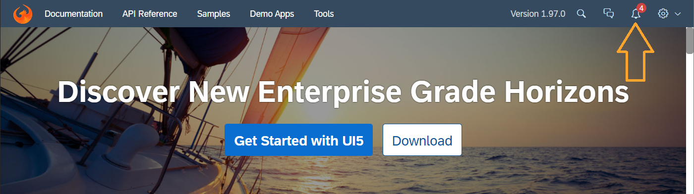

What's New in OpenUI5
1.97
What's New in OpenUI5
1.97
With
this release OpenUI5 is upgraded
from version 1.96 to 1.97.
Preview and Announcements
The following information concerns important upcoming changes. UI changes may have an impact on the user experience and may require
test cases to be adapted.
| Type |
Description |
Available as of OpenUI5 Version |
| Announcement |
Reminder: Outdated Versions to Be Removed
from the CDN
For security reasons, versions that are no longer
maintained will be removed from the UI5 content delivery network (CDN) one year after their end of maintenance. If
a version is still in maintenance, patches of that version that are older than one year will also be removed. We
have noted that a number of customers are still using such outdated versions or patches. If this affects you,
please note that once these versions or patches are removed, your applications will break. Please update to a more
recent version or patch. For more information, see: Removing
Outdated UI5 Versions from UI5 CDN.
|
n/a |
Content marked as Preview is provided as a courtesy, without a warranty, and may be subject to change. For more
information, see the preview
disclaimer.
Improved
Features
|
OpenUI5 OData V4 Model
The new version of the OpenUI5 OData V4 model introduces the following features:
-
If the parent context of an operation binding is a row
context of a list binding, and the result of the
operation fulfills the criteria for a return value
context, you can now replace that row context with the
result of the operation. For more information, see the
sap.ui.model.odata.v4.ODataContextBinding#execute
method, and in particular the
bReplaceWithRVC parameter.
-
We have introduced the
sap.ui.model.odata.v4.Context#replaceWith
method. You can use it to replace a row context of a
list binding by a kept-alive context that is not part of
the collection. Such a context can be kept alive with
the
sap.ui.model.odata.v4.Context#setKeepAlive
method introduced with OpenUI5 1.81.
-
You can now apply the sort,
filter,
changeParameters, and
suspend methods to an
sap.ui.model.odata.v4.ODataListBinding
despite changes in kept-alive contexts or bindings
relative to kept-alive contexts of the list.
Accordingly,
sap.ui.model.odata.v4.ODataListBinding#hasPendingChanges
has been extended with a
bIgnoreKeptAlive parameter.
-
The
sap.ui.model.odata.v4.ODataListBinding#filter
and
sap.ui.model.odata.v4.ODataListBinding#sort
methods do not reset the binding if the filters or
sorters are unchanged.
|
Improved
Controls
|
sap.m.Avatar
With the new decorative property, you can now
set the Avatar control to be used only for
decorative purposes and to be ignored by accessibility tools. For more information, see the API
Reference.
|
sap.m.ComboBox,
sap.m.MultiComboBox
We have
introduced the showClearIcon property. If set to
true, when there is text input it shows an
additional icon that allows users to clear their input. For more information, see the Sample for
sap.m.ComboBox and the Sample for
sap.m.MultiComboBox. |
|
sap.m.DatePicker,
sap.m.DateRangeSelection,
sap.m.DateTimePicker, and
sap.m.TimePicker
These controls can now be opened by another control. To enable
this feature, we have introduced a new
hideInput property that hides the input
field of the corresponding control. In this case, the only way
to open the picker popover is by calling the
openBy method. This new feature minimizes
the visual footprint of the controls, which is useful when more
controls are placed together. For more information, see the DatePicker, DateRangeSelection, DateTimePicker,
and TimePicker
samples.
|
|
sap.m.DateTimePicker
The control now implements the new dial-based design for the time
picker. For more information, see the Samples.
|
|
sap.m.DynamicDateRange
(Experimental)
We have added a new standard option named
DATETOYEAR - a period from today to the end
of the year. For more information, see the API
Reference.
|
|
sap.m.MessagePage
With the new titleLevel property, we have
enabled app developers to set a custom
aria-level
of the MessagePage title. For more information, see the API
Reference.
|
|
sap.m.PlanningCalendar
We have introduced a new
multipleAppointmentsSelection property that
allows mobile users to select multiple appointments. If set to
true, every mouse click or tap on an
appointment will lead to selection. The selection of multiple
appointments using the CTRL key is possible
regardless of the value of this property. For more information, see the API Reference and
the Sample.
|
|
sap.ui.integration.widgets.Card
Timeline cards now support actions defined on an item level.
These actions can be handled by the application in the same way
as actions of the List card items. For more information, see the Sample in the
Card Explorer.
|
Deprecations
|
There are currently no major deprecations. For a complete list of all deprecations, see Deprecated
APIs.
|
Demo Kit
Improvements
Demo Kit News Section with
Notifications We implemented a
News section with notifications where
you can get highlights on important news about OpenUI5. When we upload new information, you’ll see a notification
bell with a counter in the main toolbar.  |